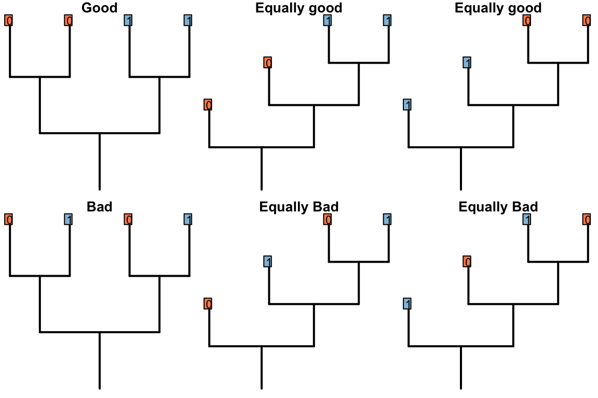

References
Agnarsson, I., & Miller, J. A. (2008). Is AccTran better than DelTran? Cladistics, 24(6), 1032–1038. doi:10.1111/j.1096-0031.2008.00229.x
Maddison, W. P. (1993). Missing data versus missing characters in phylogenetic analysis. Systematic Biology, 42(4), 576–581. doi:10.1093/sysbio/42.4.576
3 [Comment:] Incomplete; MS to work on this tomorrow.
3.1 Optimizing ambiguous characters characters
A number of approaches have been proposed concerning which resolution of ambiguous nodes is preferable.
The two most familiar approaches to resolving ambiguous node are the Accelerated Transformation (AccTran) and Delayed Transformation (DelTran) approaches.
The AccTran approach reconstructs transformations as occurring as close to the root as possible; the DelTran, as far from the root as possible.
In this case, the ambiguous resolution of the root leaves two options for the latter:
If the states
0and1represent states of a transformational character – whether an organism’s tail is red or blue, say – then there is no reason to prefer any of the equally-parsimonious reconstructions, as none implies any more homology than any other.With neomorphic characters, however, state
0stands for the absence of a character – for example, a tail – and state1its presence. On one view, a reconstruction that minimises the number of times that such a character evolves attributes more similarity to homology than an equally parsimonious reconstruction in which said character is gained multiple times independently.In this particular case, the DelTran reconstruction maximises homology. If the character denotes the presence or absence of a tail, then this reconstruction invokes the presence of a tail in the common ancestor of all taxa, meaning that the tails present in tips
a,d,eandhare homologous with one another. The AccTran reconstruction, in contrast, identifies a loss of a tail at nodes 11 and 14, with a tail evolving independently in tipsaandh. Under this reconstruction, the tails ofaandhare not homologous with each other, or with the tails ofdande. (The alternative DelTran approach, which could arguably be described as AccTran too, invokes four independent origins of the character and clearly does not maximise its homology.)Neither AccTran nor DelTran is guaranteed to maximise homology (Agnarsson & Miller, 2008).
Where we wish to maximise homology, we modify the Fitch uppass such that any node whose final state reconstruction is ambiguous is instead reconstructed as present.
We can show that this maximises homology in the problematic trees presented by Agnarsson & Miller [(2008); “A&M”]:
And this approach is robust to missing entries:
3.2 Problems with the Fitch algorithm
The Fitch algorithm counts changes in a character. It assumes that the character is applicable throughout the tree. This assumption does not lead to error if:
The character is inapplicable in fewer than three tips; or
In the trees being considered, applicable and inapplicable tokens occur in distinct regions of the tree (Maddison, 1993).
3.2.1 Red tails, blue tails
Maddison (1993) provided the following example to demonstrate the problem encountered by the Fitch algorithm when inapplicable characters were present.
Consider the following tree, each node of which is supported by a number of characters. Tail colour (illustrated; 0 = red, 1 = blue) has not yet been considered, but has the potential to resolve the polytomy on the left hand side (bold).

Tail colour should group the red-tailed tips together, and the blue-tailed tips together, but does not establish whether the ancestor of the left-hand tail-bearing clade had a red or blue tail.
3.2.2 Why Reductive coding doesn’t work
Under reductive coding, the tail and its colour are described in two character statements:
Consider the following two trees, each of which receives a score of two for the first character (presence of tail). The score of the second character (tail colour) is not as desired.
The Fitch algorithm will prefer trees in which the left-hand tail-bearing clade has a blue tail, simply because the right-hand tail-bearing clade ancestrally did.
Notice the additional step reconstructed at the root node: the Fitch algorithm reconstructs a change in tail colour in a taxon that doesn’t have a tail!
This reconstruction is not logically consistent.
3.2.2.1 An exception
If the parent character can parsimoniously be reconstructed as present at every internal node in a single unbroken region of a tree, and nowhere else, then reductive coding does work successfully. Reductive coding may therefore be appropriate if only a subset of all possible trees are under consideration, and is always (i.e. for all trees) appropriate if a character exhibits fewer than three inapplicable tokens.
3.2.3 Why Extra State coding doesn’t work
An alternative is to code the inapplicable token as an extra state:
This seems to resolve the problem case that we encountered with reductive coding:
Both trees now receive the same score for the ‘tail colour’ character, which contributes four steps. Two of these steps, however, correspond to steps that have already been counted in the parent character, reflecting the two gains of a tail.
Although this reconstruction is logically consistent, the gain (or loss) of the tail is now reflected in two characters – characters are not independent of one another.
The outcome is that each ontologically dependent character serves to increase the weight of its parent character. The loss of a tail, for example, would incur a cost of one step in the tail character and one step in each ontologically dependent character, even though it represents a single evolutionary event.
3.2.4 Why a single multi-state character doesn’t work
A different approach is to use a single character to denote both the presence and the colour of the tail:
This seems to resolve the problem case that we encountered with reductive coding:
However, we now have a situation where the gain/loss of a tail is afforded the same weight as a change in tail colour. We ought to prefer a tree where the tail evolved once (and changed colour) to one where it evolved twice (being a different colour each time).
3.2.5 Sankoff matrices
It would be possible to establish a Sankoff matrix such that a change between absent and red or absent and blue cost more than a change between red and blue, but this effectively up-weights the tail character, and it’s not clear that this is desirable – or how much this extra weight should be (Maddison, 1993).
3.2.5.1 Symmetric
Consider a character with three ontologically dependent characters:
This could be coded as a single transformation series using a Sankoff matrix:
The first thing to note is that each additional ontologically depedent character generates disproportionately more complexity in the Sankoff matrix.
Even if this additional complexity could be handled, the underlying issue remains that losing a tail, which arguably corresponds to a single evolutionary event, is allocated a large cost (here, 4) that grows in line with the number of ontogenetically dependant characters.
3.2.5.2 Gain and loss asymmetric
At the cost of symmetry, one could argue that the loss of a tail requires a single transformation, whereas the gain requires the addition of a tail and the “setting” of each ontologically dependent character, rendering an asymmetric Sankoff matrix that nevertheless respects triangular inequality:
Here, though, we encounter a new problem: reconstructions involving very many losses are preferred to those involving a single gain.
3.2.6 Conclusion
No coding mechanism can generate consistent and logically meaningful tree scores when employing the Fitch algorithm. The inapplicable state needs treating differently from other states. A new algorithm is needed.
3.3 The problem with counting steps
If a new algorithm is called for, how should it work?
One promising approach is to count transitions between applicable states, but not transitions from the applicable state to the inapplicable state:
The problem here is that the number of steps can be minimized by maximizing the number of independent gains of a parent character.
Algorithms that count steps will always be afflicted by a form of this issue. The solution is to count not steps, but homoplasies.